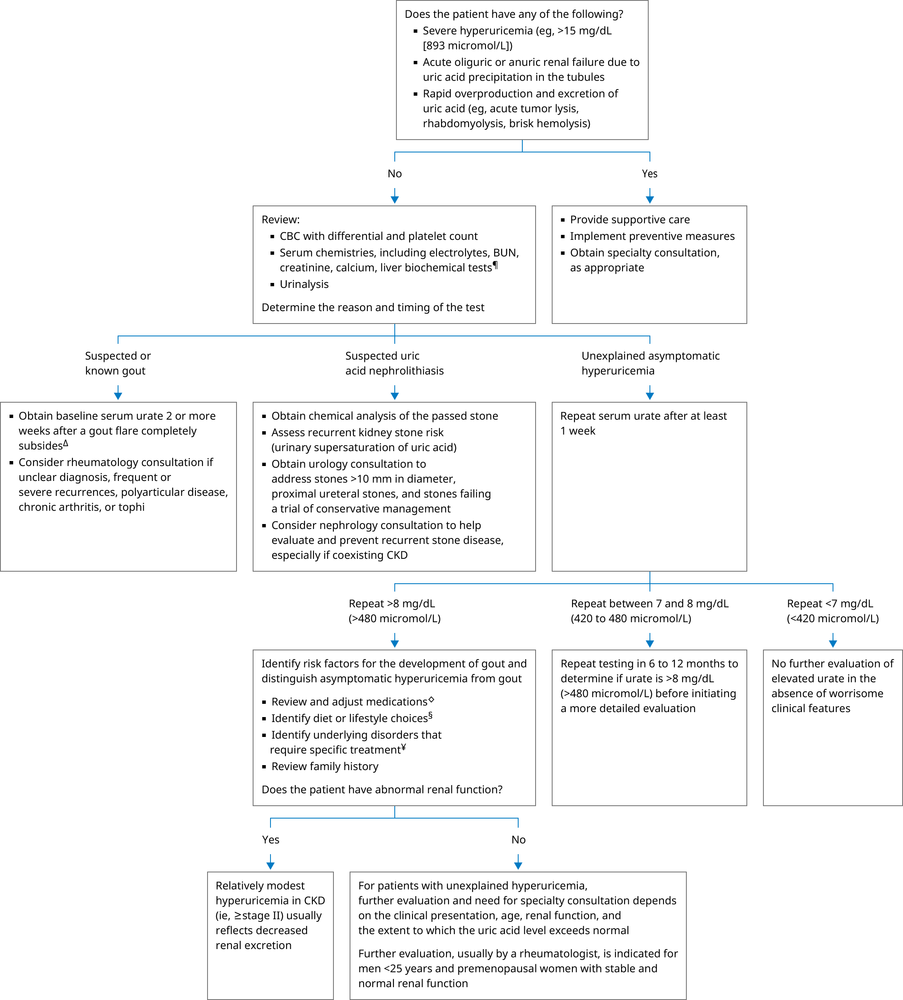

BUN: blood urea nitrogen; CBC: complete blood count; CKD: chronic kidney disease.
* The reference range for serum urate is approximately 3 to 7 mg/dL (180 to 420 micromol/L). The normal range may vary based on the population and the laboratory. Interpretation of a specific abnormal result should be based on the reference range reported with that result.
¶ Liver biochemical tests include alanine aminotransferase and aspartate aminotransferase.
Δ Refer to additional UpToDate algorithm on the diagnosis of gout flare.
◊ Medications may cause urate overproduction (eg, nicotinic acid, cytotoxic drugs) or decreased renal excretion (eg, thiazides and loop diuretics, low-dose salicylates, ethanol).
§ Causes (associations) include increased alcohol consumption and high levels of meat and seafood ingestion.
¥ Underlying conditions requiring targeted treatment include lymphoproliferative and myeloproliferative disorders, psoriasis, lead toxicity, hypertension, hyperlipidemia, CKD, obesity, diabetes, and metabolic syndrome.